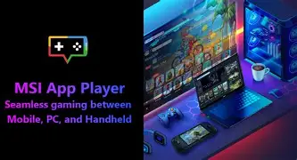
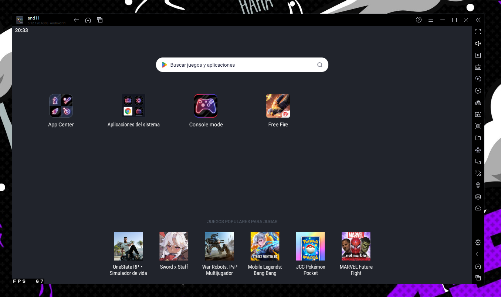
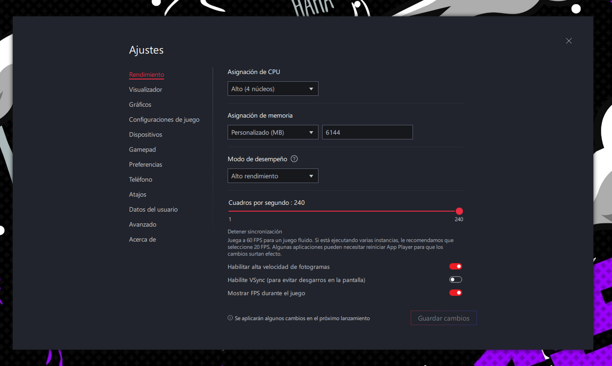
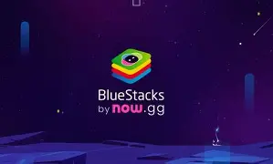
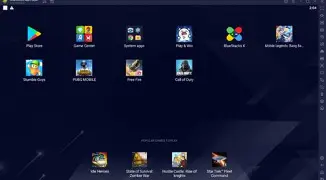
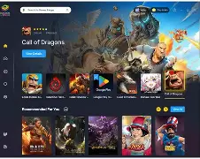

Buenas, ¿cómo se encuentran gente exploradora?
Aquí verán de todo para mejorar.
En esta página no les meteré tantos anuncios ni páginas
que les puedan meter virus y sin tanto rollo.
Aquí les dejaré links de mis redes sociales como
"INSTAGRAM, TIK TOK, DISCORD y YOUTUBE", pero aquí
les dejaré todo tipo de información sobre emuladores,
mapeos, regedits, configuraciones y también optimizaciones
para la PC.
MSI App Player es un emulador desarrollado en colaboración con MSI y basado en la tecnología de BlueStacks. Está orientado especialmente al gaming, ofreciendo funciones para mejorar el rendimiento, controlar el teclado y mouse, configurar la resolución, ajustar FPS y utilizar diferentes perfiles de dispositivos.



BlueStacks es uno de los emuladores de Android más conocidos para PC. Permite instalar aplicaciones y juegos de Android y ofrece herramientas como mapeo de teclas, múltiples instancias, configuración de rendimiento, controles personalizados y ajustes gráficos.



Configuración de MSI App Player